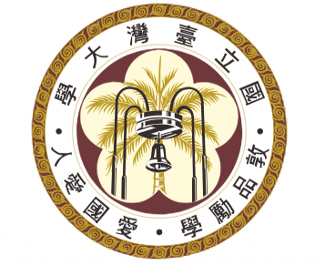
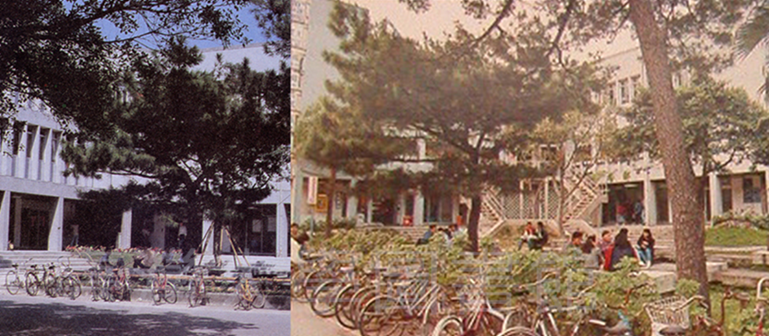
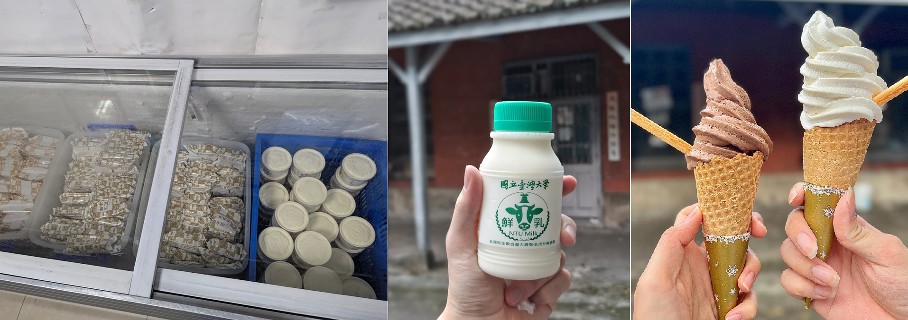

Our story began in 1976 at the Xiao-Fu Building (小福樓). Originally, there was a quiet store reserved exclusively for the post office and Hua Nan Bank staff. But in 1980, a student restaurant opened on the second floor, and that’s when students finally started hanging out there. There is a campus rumor about that opening day, the owner actually set off fireworks to celebrate. The noise was so loud that professors had to pause their lectures for 10 minutes until it finished. Eventually this became one of the most unforgettable memories for older alumni.
However, as more students visited, they realized the staff-only store was unfair. In 1989, the first Student Union President, Luo Wen-jia, led a protest. They set up stalls outside the Xiao-Fu Building to sell food at cost price, encouraging people not to shop at the staff-only store. Finally, in 1990, we were officially founded, marking a victory for NTU students, where both students and staff could share resources equally.
More interestingly, the name “Commissary” (合作社) was given by the president at the time and carries a deep meaning in Chinese. Unlike traditional businesses, profit is not our primary goal. Instead, we operate through a cooperative model, supporting the community and giving back through reinvestment and contributions to public welfare. This also reflects our shift from simply sharing resources within NTU to extending support to communities across Taiwan.
Fast forward 35 years, we are still students’ favorite campus spot and continue to play an irreplaceable role in the NTU community. Even though the original Xiao-Fu Building has been renovated in 2025 and the first shop is now part of history, our tradition lives on at Xiao-Xiao-Fu （小小福）.

Our stores scattered around the campus sell a variety of items, from food and beverages to clothing and stationery.
Our products are known for being fresh, natural, and affordable, but what many may not realize is the unique role our products play within NTU.
Take our milk, for example. It is delivered straight from the NTU Farm, providing students and faculty a fresh, smooth, and nutritious refreshment option, perfect for a treat at the end of a tiring day. This milk is even made into ice cream to be sold! At one point, the standard price was as low as 10 NTD per pint. Another famous product, carrot bread, is actually a creative brainchild of Agricultural Chemistry students.
In addition to offering affordable products, we actively collaborate with academic departments to develop “Made in NTU” items like these. We also carry NTU merchandise, including T-shirts, hoodies, and jackets, perfect for showing your school spirit. Some products even serve as experimental items, allowing us to gather real student feedback and continuously improve. In this way, our stores function not only as retail spaces, but also as platforms for innovation and learning.
In addition, we also care deeply about the stories behind the products we offer. Many of them are locally sourced, environmentally certified, or connected to the promotion of Taiwanese culture. Each item represents our commitment to sustainability and to supporting both the campus and the wider community.
Next time you’re on campus, come check us out! Whether you’re looking for a quick bite, or everyday essentials, we’ve got you covered. We offer a variety of certified products, including eggs, packaged snacks, pork, corn, and frozen foods like BBQ chicken. For those seeking healthier options, we also carry organic vegetables such as cabbage and other seasonal produce. In addition, you’ll find a wide selection of snacks, from ice cream and cookies to creative Taiwanese-style crackers.
Forgot a pen before an exam? No problem. Our stores are fully stocked with stationery and essential supplies, ensuring you’re always prepared.
NTU Commissary—we’ve got you covered.
